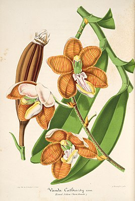

Esmeralda (растение)
Esmeralda (лат.) - олиготипный род однодольных растений семейства Орхидные. Впервые выделен немецим ботаником Генрихом Густавом Райхенбахом в 1862 году. Представители рода распространены в Китае (центральная и южная часть страны, Хайнань, Тибет), восточных Гималаях, Индии (Ассам), Непале, Мьянме, Таиланде и Вьетнаме. Крупные травянистые либо эпифитные растения. Корни воздушные. Листья в основном продолговатые, кожистые. Соцветия прямостоячие, кистевидные, несут по нескольку крупных привлекательных цветков. Губа свисающая, образованная тремя лепестками; колонка короткая, толстая.